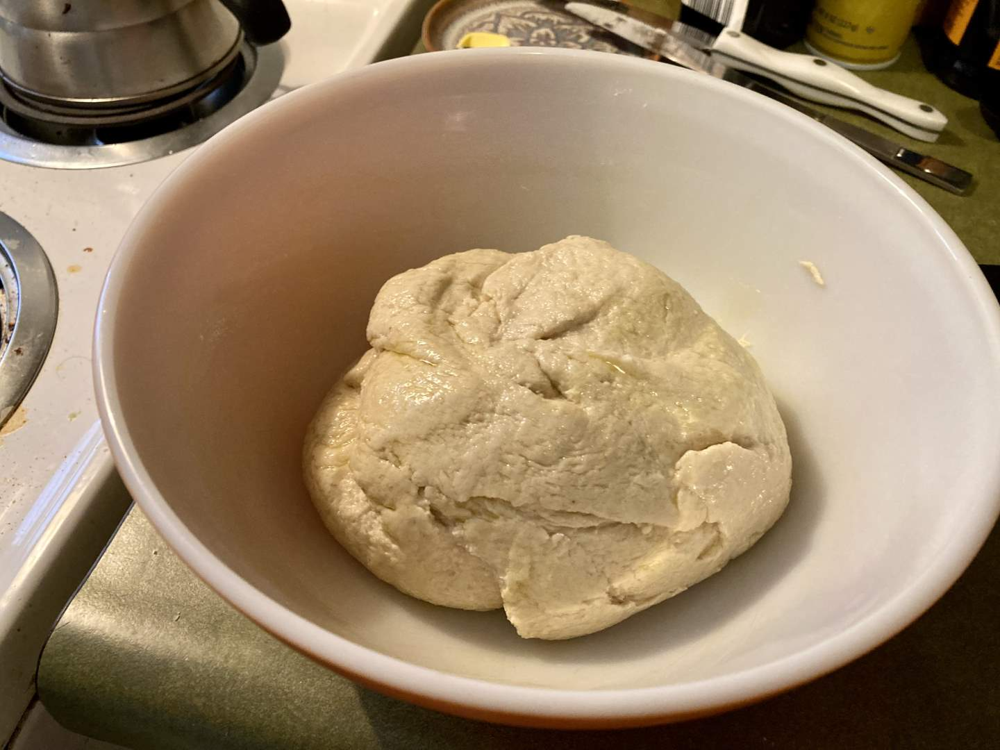
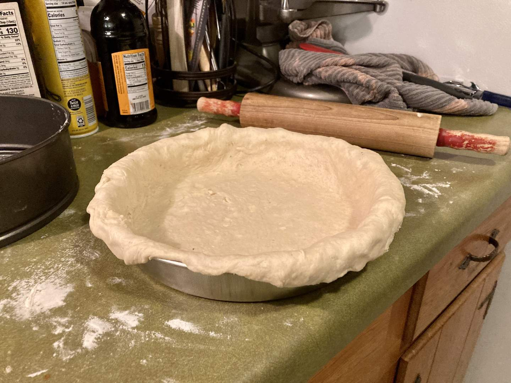
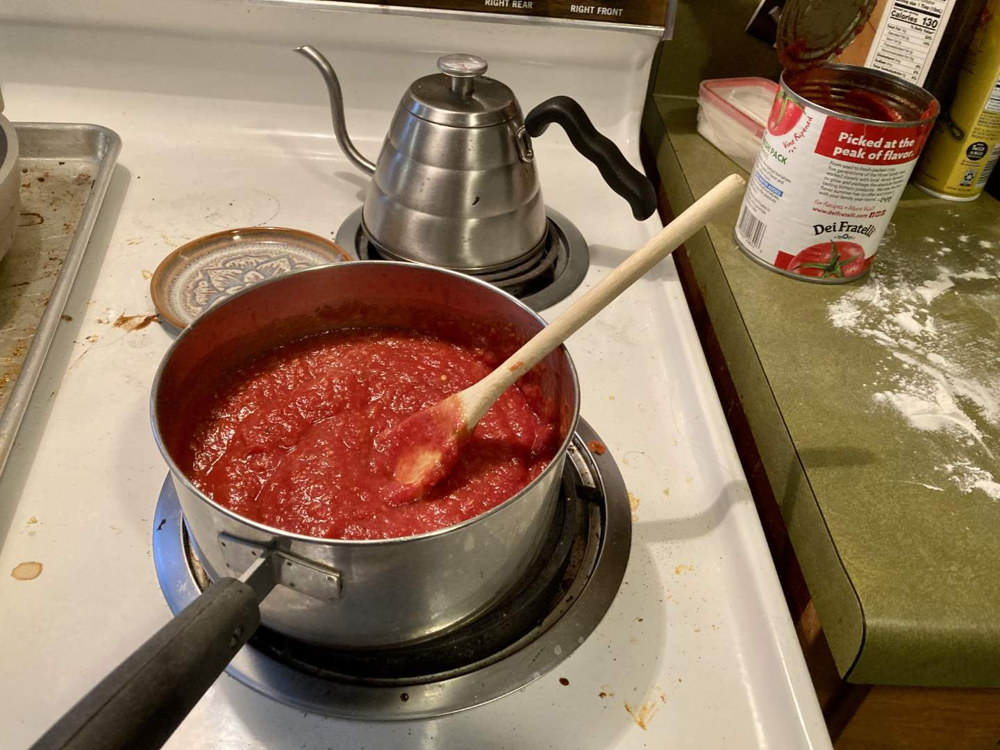
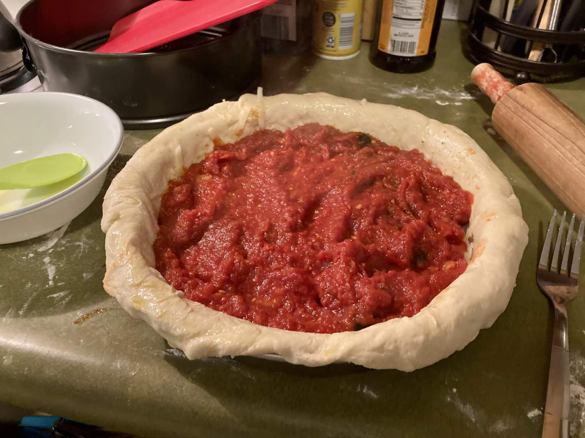
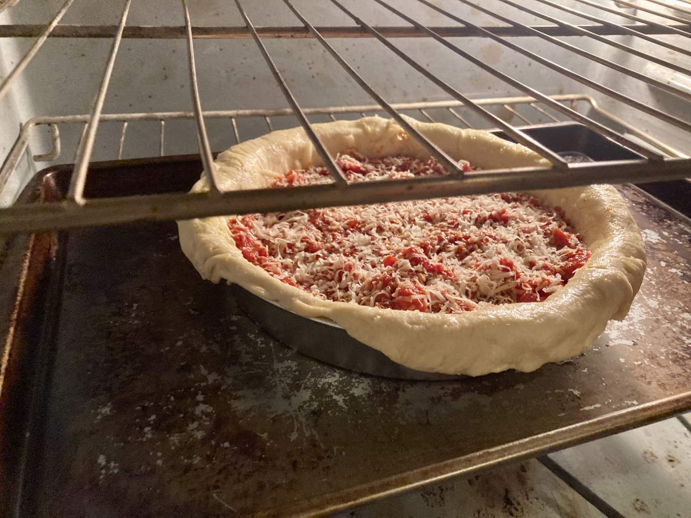
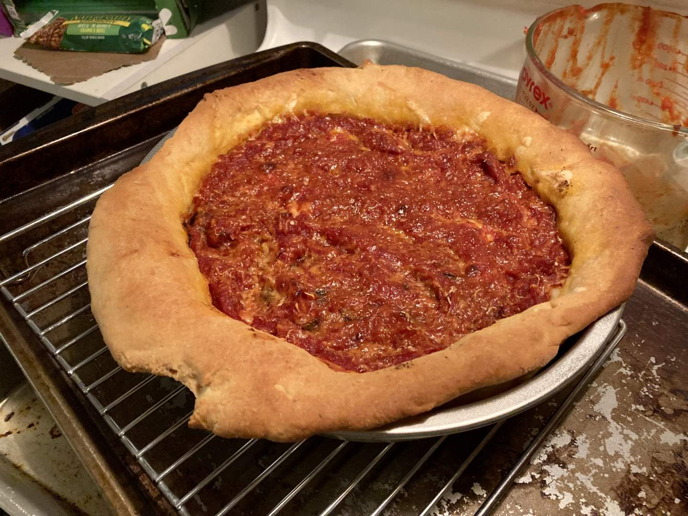
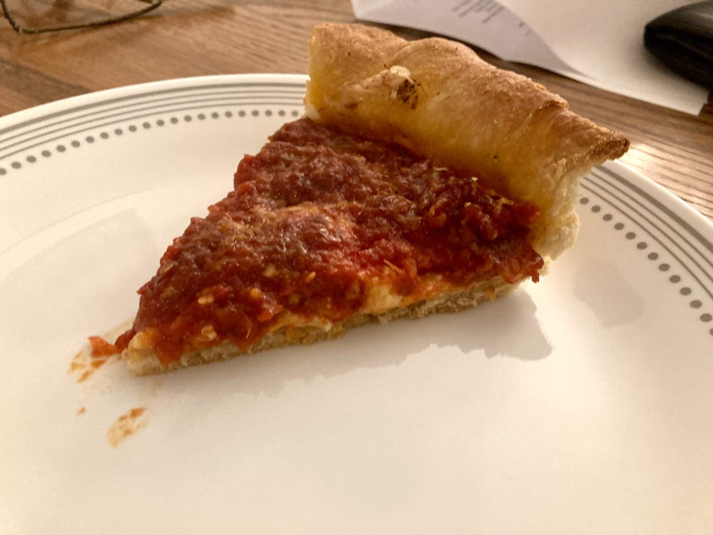

Pie 40: Deep Dish Pizza
2024-03-29Recipe from Sally's Baking Addiction.
Taste:
Difficulty:
Vibes:
Suggested pairing: your favorite pizza toppings
Sometimes, the best things in life are the tried and true. The comfort foods. Of the foods that America is known for, Chicago deep dish pizza ranks highly on the notoriety and deliciousness scales. As a person from the South who’s never been there, it’s a legendary dish. With dreams of stretchy cheese and flavorful marinara filling our minds, Ben and I embarked on a pizza-making adventure. Note: we aren’t saying that all pizzas count as pies. But look at the crust! It’s a pie!
On this particular evening, I was feeling very tired. Ben has significantly more pizza-making experience than I do, anyway, so when he offered to make most of the pie, I happily agreed. While he worked over the stovetop, crafting a delicious homemade tomato sauce and pie crust, I took the very important task of shredding cheese and slicing olives.
 The crust dough was very similar to a standard pizza crust. Ben stretched and rolled it out before laying it into a pie dish so it draped over the edges. Then we added a pile of shredded cheese, some olives on my half only, and then topped it with the marinara sauce. A sprinkle of shredded parm was the last step before baking for about 30 minutes--much longer than a normal pizza! The result was incredibly delicious. It's quite different from any other kind of pizza.
 Not only was this the best pizza we have ever made together, but it is also probably a Top 5 pie for the year so far (We’ll make a list at the end). All elements of this pie worked together harmoniously. The joy of a satisfying cheese-pull is incomparable.
